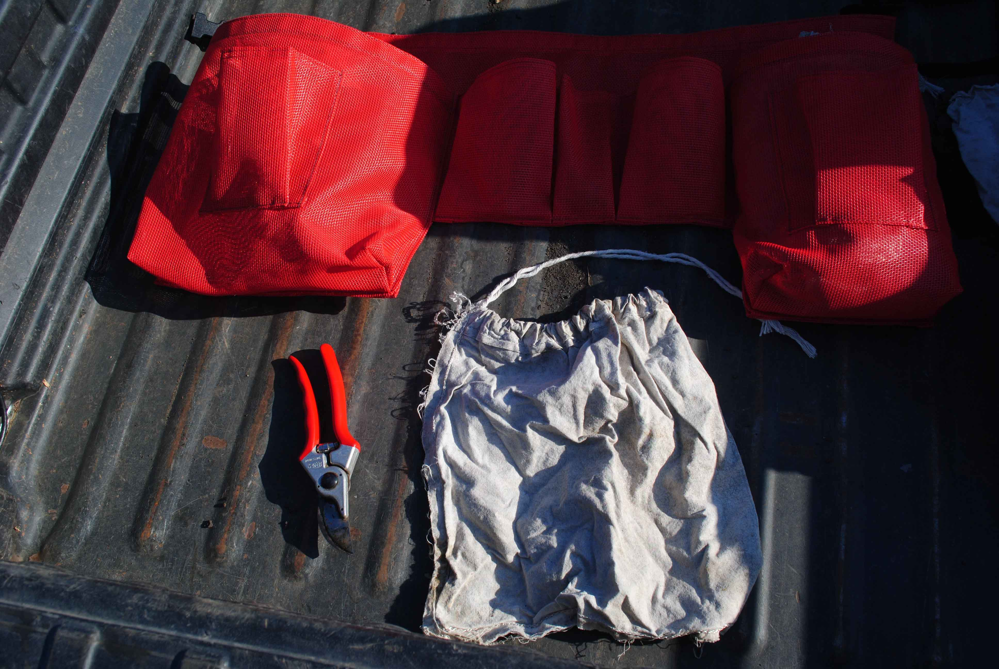
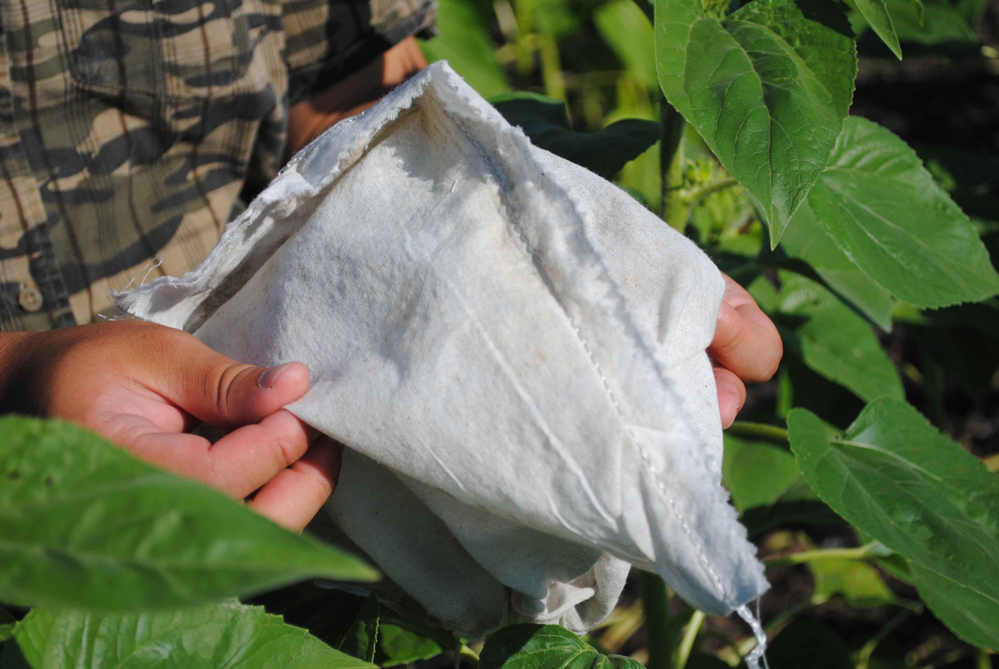

Bagging
Things to Remember
- Watch out for segregation of plants (i.e., when plants differ between flowers, height, branching, etc.). If you encounter a segregating plot, find a supervisor.
- Do not bag an off-type (i.e., a plant that differs in some way from the rest of the plot).
- If the plant is branched, with mulitple heads, get at least three heads into the bag, if possible.
- Do not bag the first plant that flowers in a plot unless there are only five, or fewer, plants in the plot.
- Periodically check bags to ensure the flowers have enough room to expand - if cramped readjust bags.
- If flowers have already opened in a plot, find a supervisor.
- If you are not sure about something, ask.
Tools Required
- Apron
- Cloth Pollination Bags
- Pruners 
Getting Started
- Grab all required tools.
- Fit the apron to your waist.
- Fill both large side pockets with the cloth pollination bags.
- Folding the bags length-ways and stacking them, allows more bags to fit inside the pockets.
- Place the pruners into another pocket on the apron.
- Begin checking each plot.
Bagging
- Select a head that is ready to be bagged.
- To gauge the optimal time see Appendix A.
- Using the pruners, remove only the leaves that will interfere with the bag.
- Place the bag over the head.
- If there are multiple heads on the plant, include at least three in the same bag.
- Close the bag around the stem.
- Ensure there is no room for any pollinators to get into the bag.
- Tie the bag closed.
- Skipping the crossing of strings, tie the knot like a pair of shoes.
- See Appendix B for further explanation.
- Pull the sides of the bag to create space for the head to continue growing. 
- Repeat steps 1 - 6 for the remainder of plants, required per plot.
Appendix A - Bagging at the Right Time
Use the images below as a reference for what to bag and what to avoid. The optimal head is not only a match to the image below, but is also representative of the majority of the heads within the plot. If all heads within the plot are shaped in a similar manner, select the most representative. If all or most of the heads are passed the optimal point, check with your supervisor for further direction.
{kind=link}
Too Early
{kind=link}
Early, but okay. Bag if Friday.
{kind=link}
Optimal
{kind=link}
Past Optimal

Avoid - Not Circular
{kind=link}
Avoid - Damaged
Appendix B - Tying the Pollination Bag
The purpose of tying the pollination bag is twofold. It not only helps to keep any pollinators out of the bag, but it also keeps the bag from opening due to wind.
Tying the bag is not hard however, there is a specific knot that should be used. Using the 'Bow Knot' allows consistency and quick access into the bag as the knot can be undone with a quick tug on a loose end.
If a supervisor is unavailable to help you learn this technique, visit fieggen.com for a step-by-step guide. Please note, the "Starting Knot", on step 1, should be skipped.